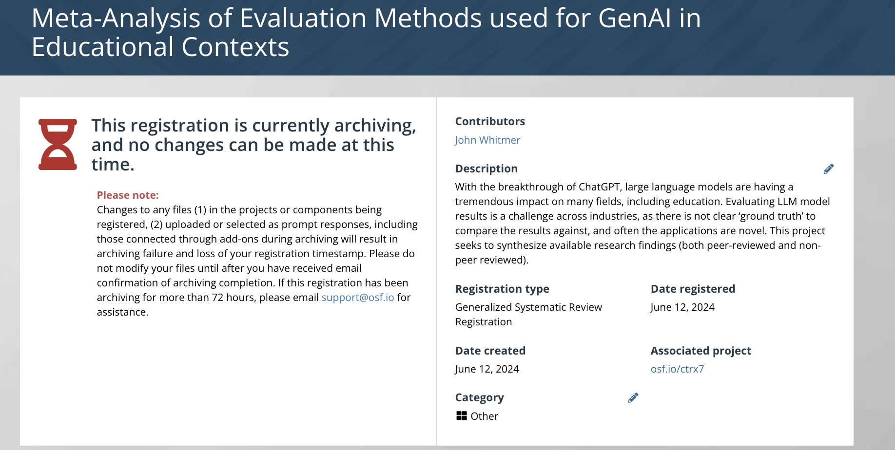
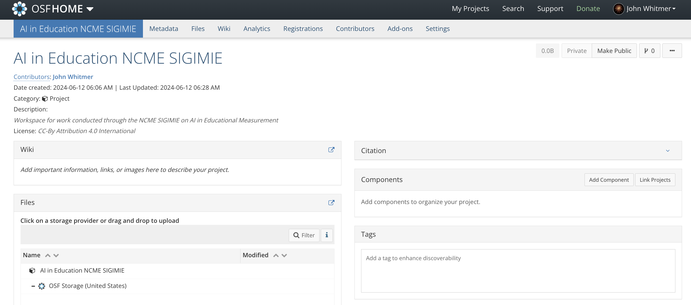

Artificial Intelligence in Measurement and Education
Introductions
Executive Board
Co-Chair: Chris Ormerod
Co-chair: John Whitmer
Secretary: Maggie Beiting-Parrish
Outline
AIME Updates
Today’s Speakers: Chris Ormerod, Amy Burkhardt, and Milan Patel from Cambium Assessment
Additional SIG Updates & Calls for Participation
AIME Updates
NCME Annual Meeting
The theme of the 2025 NCME Annual Meeting is “Educational Measurement: In Service of Society.” The theme emphasizes the “why” of our work in educational measurement and echoes the last three words of the NCME mission: “to advance theory and applications of educational measurement to benefit society”
Proposal Deadline: Friday, September 13, 11:59PM PDT
Dates: April 23-26, 2025
Place: Denver, CO
https://www.ncme.org/event/annual-meeting/upcoming-meeting2025
AIME Updates
Discussion with Andrew Ho and Katherine Castellano
Discussion of the proposal process and encourage members to work together to advance coordinated proposals.
Ideas for a SIGIMIE session
AIME Updates
Call for participation
Resource Subgroup: We are (Still) looking to develop a resource subgroup.
The primary objectives of this subgroup are:
- Establishing a repository of code for prompting and fine-tuning Large Language Models (LLMs) in Assessment.
AIME Updates
Synthesis of LLMs for Education Evidence
Building on the previously shared public Zotero group, Google archive version, conduct a literature review & synthesis of LLMs in Education with two goals: a) identify methods used to evaluate validity, reliability and fairness and b) set benchmarks and threshold levels.
We have developed an initial project scope, and several subcommittee members (Kehinde James, Daniel Olutola, Olushola Soyoye, and John Whitmer) have begun working on it, building on discussions at NCME.
Our next meeting is on 6/24 @ 1pm PT; please contact Kehinde if you would like to join or add this link.
AIME Updates
Synthesis of LLMs for Education Evidence

AIME Updates
Synthesis of LLMs for Education Evidence

AIME Updates
Routledge International Handbook of Automated Essay Evaluation
Edited By Mark D. Shermis, Joshua Wilson
The Routledge International Handbook of Automated Essay Evaluation (AEE) is a definitive guide at the intersection of automation, artificial intelligence, and education. This volume encapsulates the ongoing advancement of AEE, reflecting its application in both large-scale and classroom-based assessments to support teaching and learning endeavors.
Those interested can purchase a copy from Routledge
http://www.routledge.com/9781032502564
Receive a 20% discount by using the code SMA22 until July 31, 2024.
Research Presentation
The development of an argumentative writing feedback tool
Chris Ormerod, Amy Burkhardt, and Milan Patel from Cambium Assessment
Additional SIG Updates & Calls for Participation
AI & Education Summit
Dates: July 24 – 26, 2024
Place: Cambridge, MA USA
As computers continue to automate more routine tasks, AI education is a key enabler to future opportunities where success depends increasingly on intellect, creativity, empathy, and having the right skills and knowledge. Being digitally literate is no longer sufficient in the era of AI.
https://raise.mit.edu/events/ai-education-summit
Paper submissions must be submitted via EasyChair by 11:59 PM EDT on May 24th, 2024.
Teaching and Learning with AI
Dates: July 22nd-24th, 2024
Place: Orlando, FL
The Teaching & Learning with AI conference aims to discuss how to use AI tools effectively in instruction and support. By joining this conversation, you can help shape the impact of artificial intelligence in both teaching and learning.
AI For Educators Conference 2024
Artificial Intelligence: Friend or Foe?
Date: 15th of July
Curious to know how schools and districts successfully implement artificial intelligence (AI) in educational settings? Eager to get real-world examples of how AI is personalizing learning, increasing student engagement, improving processes, increasing productivity, and more?
Discover how AI can benefit you at the AI for Educators Conference (AI for Edu)!